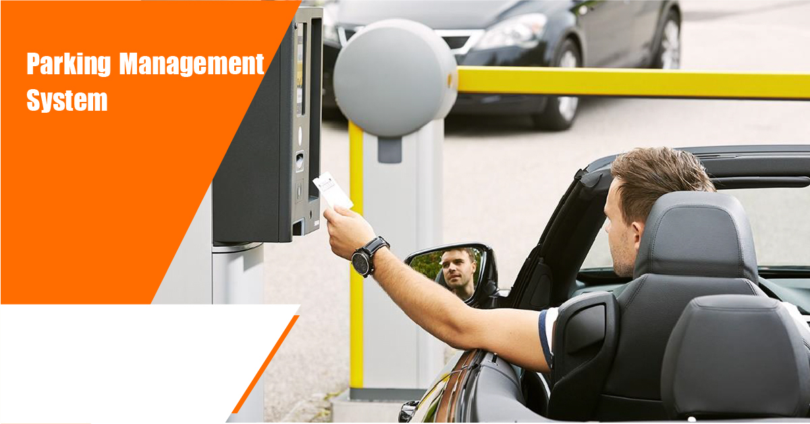
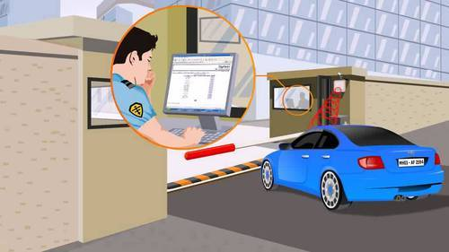

Realtime Vehicle counting –The vehicle counting
system constitutes of a non intrusive vision based vehicle counting system. This will be installed in every level such
that the management gets real time knowledge of the number of cars present in every level. Real time parking guidance
display –Display boards displays the number of empty slots at every level. Video Surveillance (optional) –An
optionalmulti camera video surveillance system can be integrated into solution.
Realtime Vehicle counting –The vehicle counting system constitutes of a non intrusive vision based vehicle counting
system. This will be installed in every level such that the management gets real time knowledge of the number of cars
present in every level. Real time parking guidance display –Display boards displays the number of empty slots at every
level. Video Surveillance (optional) –An optionalmulti camera video surveillance system can be integrated into
solution.Realtime Vehicle counting –The vehicle counting system constitutes of a non intrusive vision based vehicle
counting system. This will be installed in every level such that the management gets real time knowledge of the number
of cars present in every level. Real time parking guidance display –Display boards displays the number of empty slots
at every level. Video Surveillance (optional) –An optionalmulti camera video surveillance system can be integrated
into solution.Realtime Vehicle countiRealtime Vehicle counting –The vehicle counting system constitutes of a non
intrusive vision based vehicle counting system. This will be installed in every level such that the management gets
real time knowledge of the number of cars present in every level. Real time parking guidance display –Display boards
displays the number of empty slots at every level. Video Surveillance (optional) –An optionalmulti camera video
surveillance system can be integrated into solution.Realtime Vehicle counting –The vehicle counting system constitutes
of a non intrusive vision based vehicle counting system. This will be installed in every level such that the
management gets real time knowledge of the number of cars present in every level. Real time parking guidance display
–Display boards displays the number of empty slots at every level. Video Surveillance (optional) –An optionalmulti
camera video surveillance system can be integrated into solution.Realtime Vehicle counting –The vehicle counting
system constitutes of a non intrusive vision based vehicle counting system. This will be installed in every level such
that the management gets real time knowledge of the number of cars present in every level. Real time parking guidance
display –Display boards displays the number of empty slots at every level. Video Surveillance (optional) –An
optionalmulti camera video surveillance system can be integrated into solution.Realtime Vehicle counting –The vehicle
counting system constitutes of a non intrusive vision based vehicle counting system. This will be installed in every
level such that the management gets real time knowledge of the number of cars present in every level. Real time
parking guidance display –Display boards displays the number of empty slots at every level. Video Surveillance
(optional) –An optionalmulti camera video surveillance system can be integrated into solution.Realtime Vehicle
counting –The vehicle counting system constitutes of a non intrusive vision based vehicle counting system. This will
be installed in every level such that the management gets real time knowledge of the number of cars present in every
level. Real time parking guidance display –Display boards displays the number of empty slots at every level. Video
Surveillance (optional) –An optionalmulti camera video surveillance system can be integrated into solution.Realtime
Vehicle counting –The vehicle counting system constitutes of a non intrusive vision based vehicle counting system.
This will be installed in every level such that the management gets real time knowledge of the number of cars present
in every level. Real time parking guidance display –Display boards displays the number of empty slots at every level.
Video Surveillance (optional) –An optionalmulti camera video surveillance system can be integrated into
solution.Realtime Vehicle counting –The vehicle counting system constitutes of a non intrusive vision based vehicle
counting system. This will be installed in every level such that the management gets real time knowledge of the number
of cars present in every level. Real time parking guidance display –Display boards displays the number of empty slots
at every level. Video Surveillance (optional) –An optionalmulti camera video surveillance system can be integrated
into solution.ng –The vehicle counting system constitutes of a non intrusive vision based
vehicle counting system. This will be installed in every level such that the management gets real time knowledge of
the number of cars present in every level. Real time parking guidance display –Display boards displays the number of
empty slots at every level. Video Surveillance (optional) –An optionalmulti camera video surveillance system can be
integrated into solution.Realtime Vehicle counting –The vehicle counting system constitutes of a non intrusive vision
based vehicle counting system. This will be installed in every level such that the management gets real time knowledge
of the number of cars present in every level. Real time parking guidance display –Display boards displays the number
of empty slots at every level. Video Surveillance (optional) –An optionalmulti camera video surveillance system can be
integrated into solution.Realtime Vehicle counting –The vehicle counting system constitutes of a non intrusive vision
based vehicle counting system. This will be installed in every level such that the management gets real time knowledge
of the number of cars present in every level. Real time parking guidance display –Display boards displays the number
of empty slots at every level. Video Surveillance (optional) –An optionalmulti camera video surveillance system can be
integrated into solution.